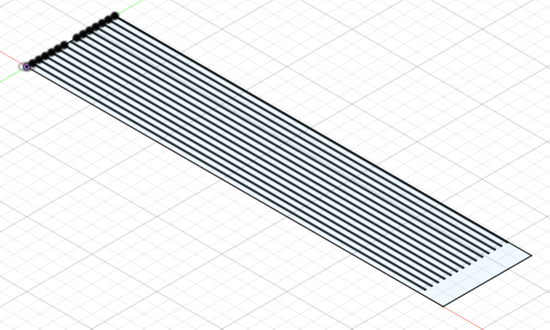
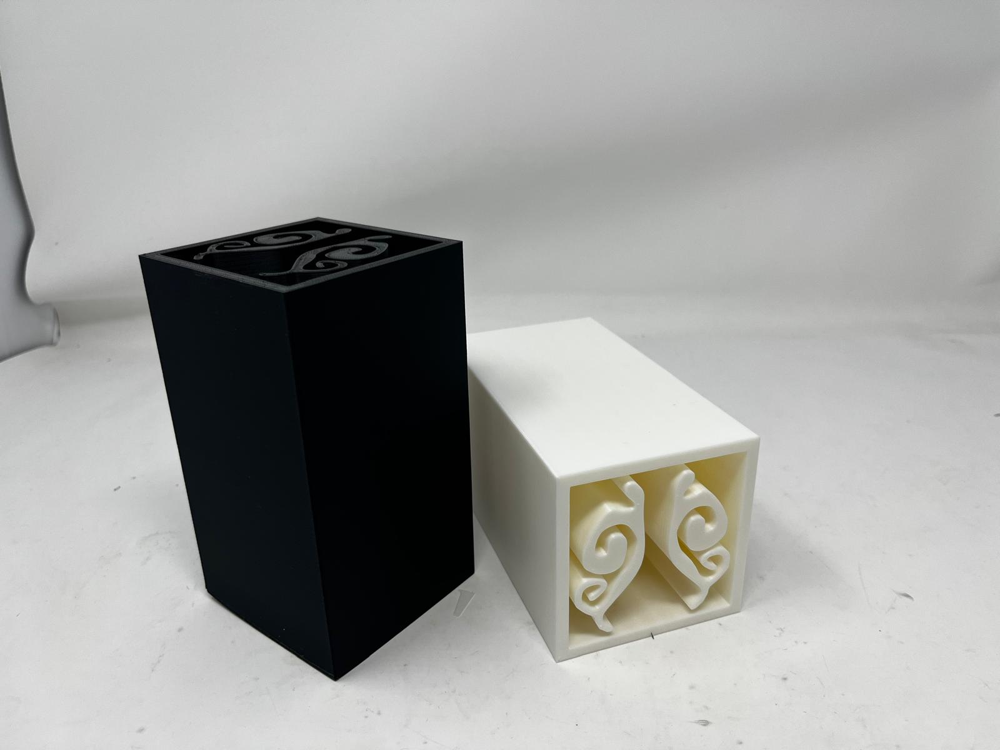

/final project
# final project
# ---------------------------------
overall, i think my final project, the nosehouse, turned out well! i was able to get all the circuitry done and implemented, as well as good cable management, while still allowing the model to be modular through the use of the wire connectors. i also implemented the iot features through influxdb and a websocket, which will be really helpful also in the future to remotely control the model and get readings. the only place i felt like i was not able to do everything i wanted was with the designs for the exchanger's internal inserts. i made a sizer to adjust the volume, and some examples of organic molds which was great, but i was not able to make a ceramic mold with the fluid flow that i had planned initially, though maybe that was too ambitious. below is my final video!
# motivation
# ---------------------------------
i chose to replicate Vogel’s model, and expand it with alternative biomimetic exchangers and in the future, assess whether these strategies can be successfully applied to modern building systems to achieve sustainable, energy-efficient climate control. this project was an opportunity for me to expand on the mechanical aspect of the project, and explore how this can enhance my research possibilities in the future.
# materials
# ---------------------------------
i collected all the materials i needed for my final project already, so i have not created a bill of materials but these are all the materials i used: polystyrene foam box, 2 bricks, 0.5" thick plywood sheets, 6mm thick plywood sheets, 0.02" thick aluminum sheets, spacing washers, silicone.
for my circuits this is my list of materials: small fan, 100W heater, 2 axial fans, 4 srd-05vdc-sl-c relays, 6 dht-22 sensors, 18 awg wire, wire connectors, arduino/esp32, breadboard.
# timeline
# ---------------------------------
here is roughly what i hope my timeline will look like:
week 1-5 --> ideation, basic circuit, basic mechanics, basic test code. week 6 --> finalise sensor circuit and test data collection. week 7 --> mvp, finalise all circuitry, cable management, and finalise all code with c++ structure. week 8 --> cnc, 3d print, mold exchanger internal designs. week 9 --> implement data transfer to database and iot features. week 10-12 --> wrap up everything, documentation, video.
# models and designs
# ---------------------------------
i made a 3d model of my exchangers and the cooler with the cut outs. i inserted the aluminum plates as well with the cut outs for the sensors in the exchangers:
i wanted to create something that allowed me to control the volume of air entering the exchangers, so i designed a "sizer" which is just a sort of comb of plywood sheet that you can insert between the aluminum plates:

for the exchanger inserts i made a mold modeled after the internal morphology of a reindeer's nasal turbinates. i found images from this research paper , and then i imported them as svgs into fusion, and created the molds out of them.
the print time was almost 14 hours on the 3d printer, and was also constrained by the height of the 3d printer, so i was not able to print many, but i printed 2 molds.

i also made other example molds using cross-sections of the nose with varying complexity, and printed those too as examples of different designs.
i filled my big molds with silicone, because i found out that silicone's heat capacity is pretty good, so it would be a good substitute to the aluminum plates. removing the silicone from the molds was absolutely terrible work, and i must have used about 10 different power tools and hand tools, but the mold finally came off, and the silicone held the shape really really well, so i was quite happy with the result! you can download all my fusion files here.
# code
# ---------------------------------
i combined my codes from week 4 and week 6 for the sensors and relays with my code from week 9 with the iot features, and used chatgpt to help integrate the codes, and debug. you can download my final code here. below is the code too:
#include "DHT.h"
#include
#include
#include
#include
#include
#define DEVICE "ESP32"
#include
#include
const char* ssid = "MAKERSPACE";
const char* password = "12345678";
// InfluxDB settings
#define INFLUXDB_URL "https://us-east-1-1.aws.cloud2.influxdata.com"
#define INFLUXDB_TOKEN "RZBxQi7EY_6_5zoDaYZh1ZfytRn8mHnCKO6kfKPUb-pj1ayLJ7uAtL7THiDQjY2thmPl3zY26StChjcR-7Y9-g=="
#define INFLUXDB_ORG "4cad98932b3b99ef"
#define INFLUXDB_BUCKET "Nosehouse Test"
#define TZ_INFO "EST5EDT"
// InfluxDB client instance with preconfigured InfluxCloud certificate
InfluxDBClient client(INFLUXDB_URL, INFLUXDB_ORG, INFLUXDB_BUCKET, INFLUXDB_TOKEN, InfluxDbCloud2CACert);
// Data point
Point sensorReadings("measurements");
// fan relays to switch on and off alternatively
// heater relay to switch on when avg temp of readings < 21C
// fan relay always on
// Relay pins
int relayPin1 = 26; //aerial fan (red)
int relayPin2 = 21; //left fan (blue)
int relayPin3 = 19; //right fan (white)
int relayPin4 = 32; //heater (orange)
// DHT pins
#define DHTPIN1 25 //back (brown)
#define DHTPIN2 33 //front (gray)
#define DHTPIN3 23 //left in (yellow)
#define DHTPIN4 5 //right in (purple)
#define DHTPIN5 22 //left out (green)
#define DHTPIN6 18 //right out (gray)
#define DHTTYPE DHT22
DHT dht1(DHTPIN1, DHTTYPE);
DHT dht2(DHTPIN2, DHTTYPE);
DHT dht3(DHTPIN3, DHTTYPE);
DHT dht4(DHTPIN4, DHTTYPE);
DHT dht5(DHTPIN5, DHTTYPE);
DHT dht6(DHTPIN6, DHTTYPE);
// Timing variables
unsigned long lastRelayToggle = 0;
unsigned long relayInterval = 4000; // toggle relays every 4s
unsigned long lastSensorRead = 0;
unsigned long sensorInterval = 500; // read sensors every 0.5s
bool relaysOn = false;
// Heater control
const float setTemp = 21.0;
bool heaterOn = false;
// Websocket
AsyncWebServer server(80);
AsyncWebSocket ws("/ws");
// HTML page for user to set interval
const char index_html[] PROGMEM = R"rawliteral(
Relay Interval Controller
Set Relay Toggle Interval (ms)
Current interval: %INTERVAL% ms
)rawliteral";
// Send current interval to all clients
void notifyClients() {
ws.textAll(String(relayInterval));
}
float t1 = NAN, t2 = NAN, t3 = NAN, t4 = NAN, t5 = NAN, t6 = NAN;
float h1 = NAN, h2 = NAN, h3 = NAN, h4 = NAN, h5 = NAN, h6 = NAN;
int sensorPhase = 0;
bool haveAllSensors = false;
// Websocket event handler
void onEvent(AsyncWebSocket *serverPtr, AsyncWebSocketClient *client, AwsEventType type, void *arg, uint8_t *data, size_t len) {
if (type == WS_EVT_DATA) {
AwsFrameInfo *info = (AwsFrameInfo*)arg;
if (info->final && info->index == 0 && info->opcode == WS_TEXT) {
// build string safely from data[]
String msg;
for (size_t i = 0; i < len; i++) msg += (char) data[i];
if (msg.startsWith("interval:")) {
unsigned long newInt = msg.substring(9).toInt();
if (newInt >= 2000) { // minimum allowed interval
relayInterval = newInt;
notifyClients();
Serial.printf("New relay interval set: %lu ms\n", relayInterval);
}
}
}
}
}
// Processor for HTML template
String processor(const String& var) {
if (var == "INTERVAL") return String(relayInterval);
return String();
}
// Set up
void setup() {
Serial.begin(115200);
// Setup wifi
Serial.print("Connecting to WiFi");
WiFi.begin(ssid, password);
while (WiFi.status() != WL_CONNECTED) {
delay(1000);
Serial.print(".");
}
Serial.println();
Serial.print("IP: ");
Serial.println(WiFi.localIP());
// Websocket and webserver set up
ws.onEvent(onEvent);
server.addHandler(&ws);
// Web page
server.on("/", HTTP_GET, [](AsyncWebServerRequest *request){
request->send_P(200, "text/html", index_html, processor);
});
server.begin();
// Add tags
sensorReadings.addTag("device", DEVICE);
sensorReadings.addTag("location", "office");
sensorReadings.addTag("sensor", "dht22");
// Accurate time is necessary for certificate validation and writing in batches
timeSync(TZ_INFO, "pool.ntp.org", "time.nis.gov");
// Check server connection
if (client.validateConnection()) {
Serial.print("Connected to InfluxDB: ");
Serial.println(client.getServerUrl());
} else {
Serial.print("InfluxDB connection failed: ");
Serial.println(client.getLastErrorMessage());
}
// Relay set up
pinMode(relayPin1, OUTPUT);
pinMode(relayPin2, OUTPUT);
pinMode(relayPin3, OUTPUT);
pinMode(relayPin4, OUTPUT);
// Aerial fan always on
digitalWrite(relayPin1, HIGH);
// Start with left fan off
digitalWrite(relayPin2, LOW);
// Start with right fan on
digitalWrite(relayPin3, HIGH);
// Start with heater off
digitalWrite(relayPin4, LOW);
// Initialize sensors
dht1.begin();
dht2.begin();
dht3.begin();
dht4.begin();
dht5.begin();
dht6.begin();
Serial.println("initialized");
}
void loop() {
ws.cleanupClients();
unsigned long now = millis();
// Relay control
if (now - lastRelayToggle >= relayInterval) {
lastRelayToggle = now;
relaysOn = !relaysOn; // flip state
if (relaysOn) {
digitalWrite(relayPin2, HIGH);
digitalWrite(relayPin3, LOW);
} else {
digitalWrite(relayPin2, LOW);
digitalWrite(relayPin3, HIGH);
}
}
if (now - lastSensorRead >= sensorInterval) {
lastSensorRead = now;
if (sensorPhase == 0) {
// read sensors 1 & 2
h1 = dht1.readHumidity();
t1 = dht1.readTemperature();
h2 = dht2.readHumidity();
t2 = dht2.readTemperature();
} else if (sensorPhase == 1) {
// read sensors 3 & 4
h3 = dht3.readHumidity();
t3 = dht3.readTemperature();
h4 = dht4.readHumidity();
t4 = dht4.readTemperature();
} else {
// read sensors 5 & 6
h5 = dht5.readHumidity();
t5 = dht5.readTemperature();
h6 = dht6.readHumidity();
t6 = dht6.readTemperature();
haveAllSensors = true;
}
// print whichever sensors were just read for debugging
if (sensorPhase == 0) {
printSensorData("Sensor1", t1, h1);
printSensorData("Sensor2", t2, h2);
} else if (sensorPhase == 1) {
printSensorData("Sensor3", t3, h3);
printSensorData("Sensor4", t4, h4);
} else {
printSensorData("Sensor5", t5, h5);
printSensorData("Sensor6", t6, h6);
}
Serial.println("--------------------");
// Only write to Influx when we've gone through all three phases
if (haveAllSensors) {
sensorReadings.addField("T1", t1);
sensorReadings.addField("T2", t2);
sensorReadings.addField("T3", t3);
sensorReadings.addField("T4", t4);
sensorReadings.addField("T5", t5);
sensorReadings.addField("T6", t6);
sensorReadings.addField("H1", h1);
sensorReadings.addField("H2", h2);
sensorReadings.addField("H3", h3);
sensorReadings.addField("H4", h4);
sensorReadings.addField("H5", h5);
sensorReadings.addField("H6", h6);
// Print what are we exactly writing
Serial.print("Writing: ");
Serial.println(client.pointToLineProtocol(sensorReadings));
// Write point into buffer
client.writePoint(sensorReadings);
// Clear fields for next usage. Tags remain the same.
sensorReadings.clearFields();
haveAllSensors = false;
}
// If no Wifi signal, try to reconnect it
if (WiFi.status() != WL_CONNECTED) {
Serial.println("WiFi connection lost - reconnecting...");
WiFi.disconnect();
WiFi.reconnect();
}
// Heater control
if (!isnan(t1) && !isnan(t6)) {
float avgTemp = (t1 + t6) / 2.0;
if (avgTemp < setTemp && !heaterOn) {
heaterOn = true;
digitalWrite(relayPin4, HIGH); // turn heater ON
Serial.println("Heater ON");
} else if (avgTemp >= setTemp && heaterOn) {
heaterOn = false;
digitalWrite(relayPin4, LOW); // turn heater OFF
Serial.println("Heater OFF");
}
} else {
Serial.println("Failed to read sensors 1 or 6: Heater unchanged");
}
// advance phase (0->1->2->0)
sensorPhase = (sensorPhase + 1) % 3;
}
}
void printSensorData(const char* label, float t, float h) {
if (isnan(h) || isnan(t)) {
Serial.print(label);
Serial.println(": Failed to read");
} else {
Serial.print(label);
Serial.print(": ");
Serial.print(t);
Serial.print(" °C, ");
Serial.print(h);
Serial.println(" %");
}
}